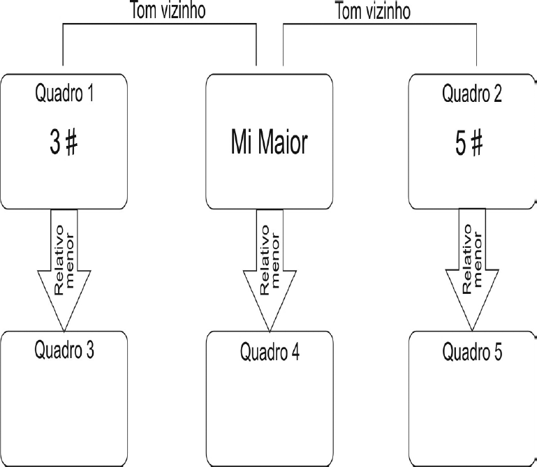

O diagrama abaixo mostra a relação entre
tonalidades no tom base de Mi Maior.
Observe os quadros 1 a 5.

Os quadros correspondem às seguintes
tonalidades e respectivas armaduras de
clave:
-
Quadro 1: Lá Maior (fá#, dó#, sol#)
-
Quadro 2: Si Maior (fá#, dó#, sol#, ré#, lá#)
-
Quadro 3: Fá # menor (fá#, dó#, sol#)
-
Quadro 4: Dó menor (fá#, dó#, sol#, ré#)
-
Quadro 5: Sol tt menor (fá#, dó#, sol#, ré#,
lá#)
Estão CORRETAS somente as afirmativas:
-
I, II e III.
-
I, III e V.
-
III, IV e V.
-
I, II, III e V.
-
II, III e V.